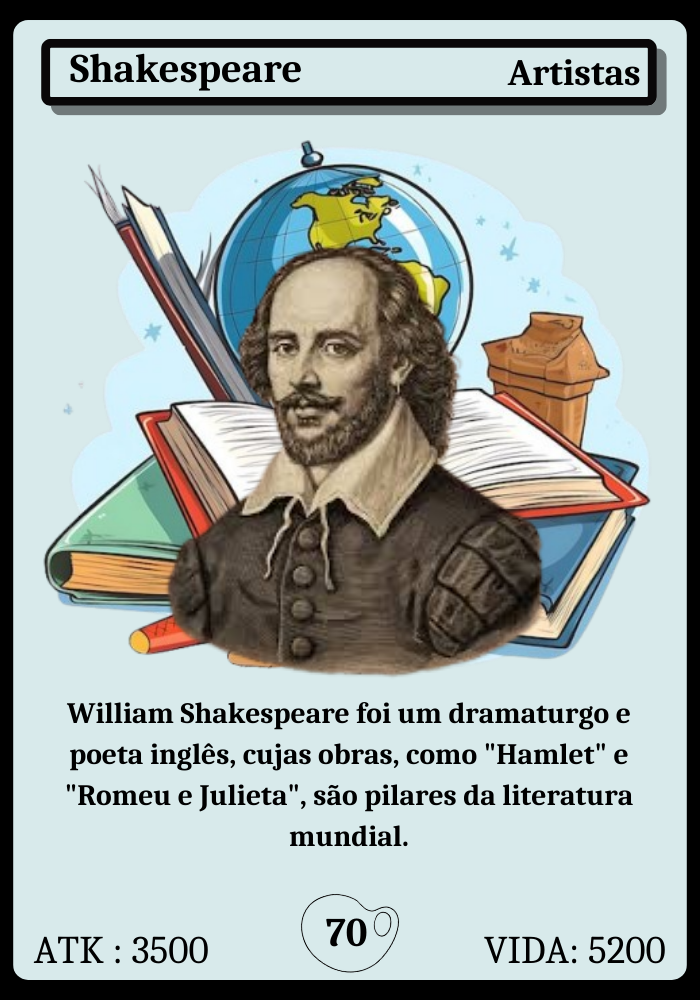

Cartas
Essas são as classes das cartas do jogo CareCards
Inovadores

Na classe "Inovadores", os jogadores criam invenções e gadgets com cartas especiais, usando criatividade para virar o jogo e surpreender os oponentes.
Filósofos

Na classe "Filósofos", os jogadores usam cartas para manipular a estratégia e o pensamento, antecipando movimentos e controlando o ritmo do jogo com sabedoria.
Líderes

Na classe "Líderes", os jogadores usam cartas para fortalecer aliados e comandar o jogo com estratégia e autoridade.
Inventores

Na classe "Inventores", os jogadores criam e aprimoram cartas poderosas, usando inovação para construir recursos e soluções que viram o jogo a seu favor.
Artistas
Na classe "Artistas", os jogadores usam cartas criativas para manipular o jogo de formas imprevisíveis, criando efeitos únicos e surpreendentes que alteram o curso da partida.
Suporte

Na classe "Suporte", os jogadores utilizam cartas para curar, proteger e fortalecer seus aliados, garantindo estabilidade e vantagem estratégica durante a partida.